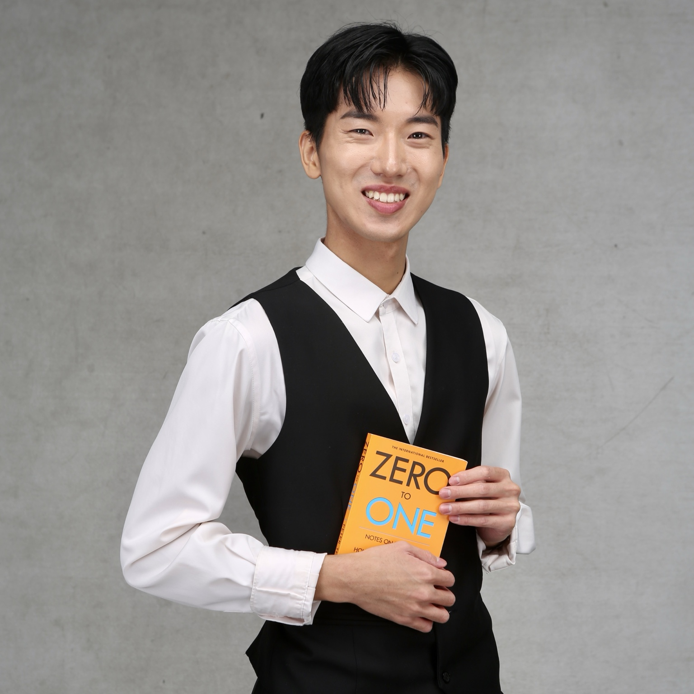

How can independent musicians turn discovery into real fans and sustainable careers?
Almost 200,000 streams taught me how hard that leap can be.
Independent musician. Growth experimenter. ROK Air Force linguist. Curious about the gap between what technology can do and what people can actually use.

Three different environments. Three lessons about creating, reaching people, and making things work under real constraints.
Producing, shipping, and promoting music taught me that building something great is only half the challenge.

Viral Reels, real clinic marketing, and Suno taught me to separate attention from lasting value.
ROK–US coordination and peer support showed me how much reliability, context, and people matter.
My work spans music, marketing, and military service. I see them as different sides of the same challenge.
Technology matters when it reaches real people, solves real problems, and works in the real world.
Since submitting my HAA application, I rebuilt Namwon Miraeyeonhap Clinic’s website using Claude Code.
The previous website cost KRW 360,000 (about US$270) every two years. Rebuilding it myself brought the ongoing cost to approximately KRW 20,000 (about US$15) per year—about 89% lower, saving roughly US$120 annually.
USD figures are rounded estimates at approximately KRW 1,336 per US$1, using the 17 November 2026 ECB reference rates.
SOUTH KOREA ↔ SEATTLE
I'm a University of Washington student on leave while serving as an English linguist in the Republic of Korea Air Force. Outside that role, I make music as 82 Jae, create short-form videos, and help with marketing for my family's clinic.
These projects have given me small wins and harder questions. Reaching people is one thing. Building something useful enough to sustain a career is another. I want to support myself, keep making music, and learn by working on problems I know firsthand.
These are the questions I keep returning to. I want to test them by making things, listening to users, and following the evidence.
Almost 200,000 streams taught me how hard that leap can be.
Military service taught me the difference between technical possibility and real-world deployment.
Whether it's music promotion or safety-critical work, adoption is a human problem as much as a technical one.